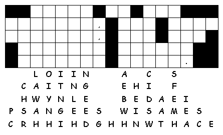

This Week: Exodus 34:29-35 Psalm 99 2 Corinthians 3:12-4:2 Luke 9:28-36, (37-43)
Elementary School Pew-work
N T L X V C T O
|
|
|
from www.geocities.com/lectionarypuzzles/ free to distribute for free with this notice. Words are in a straight line left to right or top to bottom |
||
|
1. Who went up on the mountain with Jesus? ______________________________ 2. Who appeared with Jesus on the mountaintop? ______________________________ |
Created by Puzzlemaker at DiscoverySchool.com |
3. What did the disciples offer to do?
___________________________________________________________________________
4. What did the voice say from the sky?
___________________________________________________________________________
5. When did we hear the voice speak before?
___________________________________________________________________________
Next week: Deuteronomy 26:1-11 Psalm 91:1-2, 9-16 Romans 10:8b-13 Luke 4:1-13